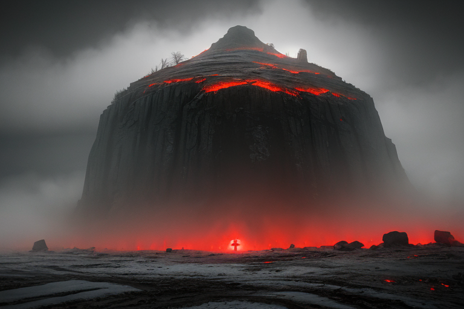
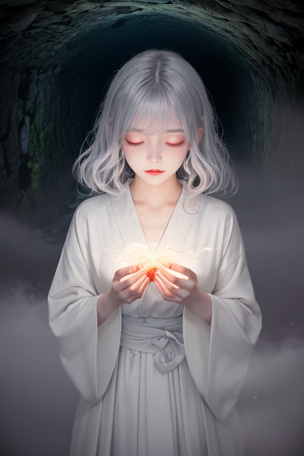
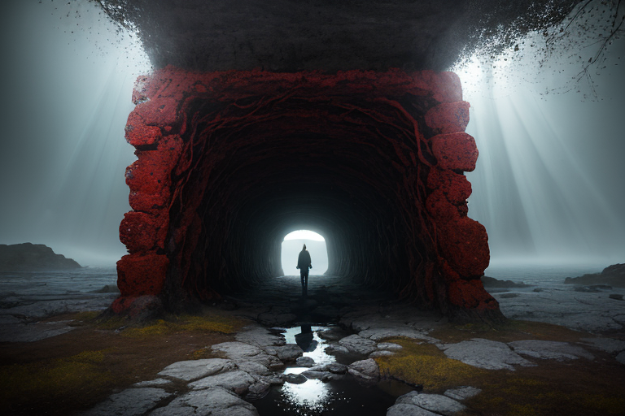
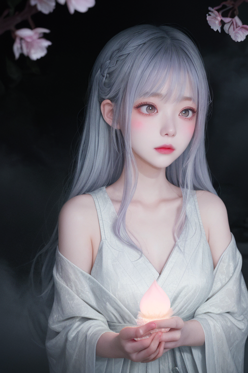
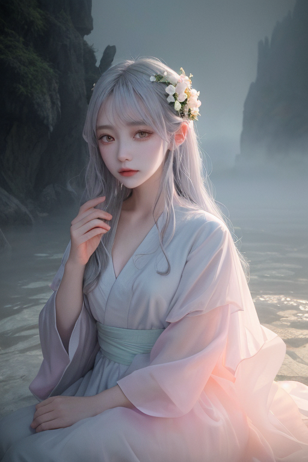

第一章 現実の青森
あなたはまだ気づいていない。この土地にも、王がいることを。
恐山の霊場は、深い霧に包まれていた。イタコの口寄せが響くその地は、死者と生者が最も近づく「境界」であり、この列島の「歪み」が濃く淀む場所の一つでもあった。その歪みは、時に地鳴りとして、時に吹きすさぶ地吹雪として現実に現れる。青函トンネルの深部では、膨大な水圧と岩盤の軋みが、絶え間ない終わりの予感を囁き続けていた。
ここは終着と再生の王国、アオモリア・レヴナント。王は、歪みの調整者として、この地に封じ込められてきた。津軽海峡を隔てたかつての孤島性、繰り返される厳冬と災害。それらはすべて「終わり」の感情を蓄積させ、この土地の地層のように層を成している。王の役目は、その蓄積された終焉の圧力を、爆発ではなく、ゆるやかな解放へと導くことにある。しかし、歪みは深く、その封印は時に軋む。終わりは、本当に終わりか？ その問いが、冷たい霧の底から、ゆっくりと湧き上がろうとしていた。

第二章「歪みの兆候」
恐山の冷たい霧が、いつもより濃く、重たかった。イタコの巫女たちが魂を呼ぶその地で、王は静かに立ち、地脈の鼓動を聴いていた。通常は一定のリズムを刻む歪みの波が、ここ数日、微かに乱れている。それは、深い地層に封じ込められた「終わり」の感情が、長い眠りから目覚めかける、かすかな痙攣のようなものだった。
「軋みが、増しています」
霧の中から、ネブラの声が聞こえた。彼女の霧の衣は、地脈の不安定な振動を映し、不規則な模様を描いていた。
「1988年、青函トンネルがこの地を貫いた時、物理的な孤島性は終わりました。しかし、地中に蓄積された『隔てられた時間』の感情は、そのまま封印され続けています。その封印が、経年により弱まりつつある」
王は答えず、目を閉じた。感覚を研ぎ澄ませる。十和田湖の底から、奥入瀬の流れに沿って、弘前城の石垣の下まで。かつて津軽藩が幾多の苦難を乗り越えて築いたこの地の歴史そのものが、巨大な感情の貯水池となっている。その水面に、今、微かな波紋が立っていた。終わりは、本当に終わりか？ 封じ込められたものは、完全に静まることはない。それは再生への胎動なのか、それとも、ただの崩壊の前兆なのか。霧は、その答えをますます深く覆い隠した。

第三章 王の葛藤
恐山の冷たい風が、イタコの低い詠唱を運んでくる。アオモリア・レヴナントは、その声に耳を傾けながら、地中に張り巡らされた「歪み」の脈動を感じ取っていた。青函トンネルという巨大な人工物が海底にもたらした静かなストレス。それは、かつて津軽海峡が隔てたもの以上に深い、時間の断層だった。
「解放すべきでしょうか」ネブラの声が霧のように背後からまとわりつく。「この封印は、あまりに長く、あまりに完全です。完全であるがゆえに、かえって歪みを生んでいるのかもしれません」
王は目を閉じた。十和田湖の底に沈む古い火山の息遣い。奥入瀬の流れが運ぶ、腐葉土と新芽の混ざり合う匂い。すべては終わりと始まりの循環の中にある。ならば、この封印も、永遠に固定されるべきものではない。
しかし、解放は危険を伴う。封じられた「終焉」の感情が、制御不能な雪解けのように流れ出し、この地を飲み込むかもしれない。王は自らに問うた。終わりを恐れないというのは、無謀に扉を開けることなのか。それとも、次の再生を信じて、氷を割る一撃を加えることなのか。彼の深紅の紋章が、静かに、しかし確かに鼓動を始めた。

第四章 封印の記憶
恐山の冷たい風が、イタコの廃屋の軒先を揺らす。ネブラは、霧のように薄い指で、積もった記憶の塵を撫でた。
「この封印は、終わりを『固定』するためのものではありませんでした」彼女の声は、遠くの地吹雪のようにかすかだ。「むしろ、終わりを『温存』するため。津軽の冬が、春の種を地中で守るように」
彼女は、青函トンネルが海底に貫かれた年、この地に溜まりすぎた「終わり」の感情を語った。廃れゆく鉄路、過疎化する集落、消えゆく方言。それらは自然の摂理であり、否定すべきものではない。しかし、その感情の重みが、歪みの列島のバランスを危うくするほどに凝縮された。王は、それらをすべて否定せず、消去もせず、この山の霊場に封じ込めて「眠らせた」。
「終わりは、本当に終わりでしょうか」ネブラは虚空を見つめる。「トンネルは津軽と北海道を繋ぎ、林檎の木は枯れても土に還り、新しい芽の糧となる。封じられたものは、ただ時を待っているだけなのです」
王は、その言葉に、深紅の紋章の鼓動を感じた。それは終焉の脈動ではなく、氷の下を流れる、春への胎動だった。

第五章 微調整と余韻
恐山の霊場は、再び静謐に包まれた。イタコの口寄せも終わり、訪れる者たちは、それぞれの「終わり」と向き合い、麓へと下っていく。王は、山肌に刻まれた歪みの亀裂に手を触れた。深紅の紋章が微かに輝き、封じられた終焉の感情が、再生への緩やかな循環へと微調整されていく。それは、津波の速度を一秒遅らせるような、かすかな手触りの仕事だ。
代償は、王自身の内側に訪れた。彼は、この地に封じ込められた膨大な「終わり」の感情の一片を、自らの核に抱え込んだ。それは痛みではない。林檎の実が腐り、土に還る時の、静かな諦観に似た重みである。ネブラが彼の背後からそっと腕を回す。霧が、その重みを包み、分かち持とうとする。
やがて、歪みは修復された。十和田湖の水面は、何事もなかったように深い碧をたたえ、奥入瀬の流れは冷たい水音を響かせる。彼らは、次の調整へと姿を消す。しかし、弘前城の石垣の隙間や、ねぶたの灯りの揺らぎの中に、深紅と白の微かな残響は、ほんの一瞬、確かに留まる。終わりは終わりではない。それは、次の何かが、息を潜めて待つ、間の時間なのだ。
あなたの町にも、王がいる。